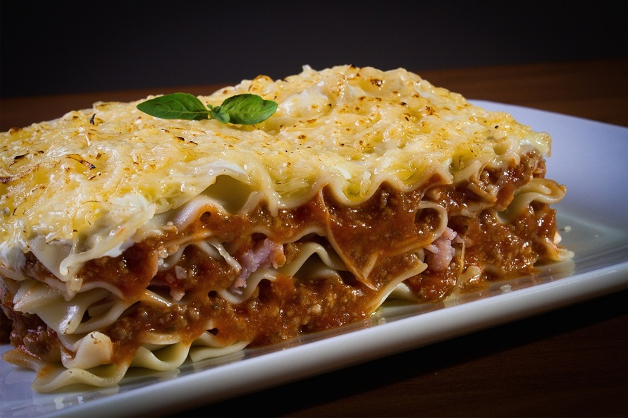
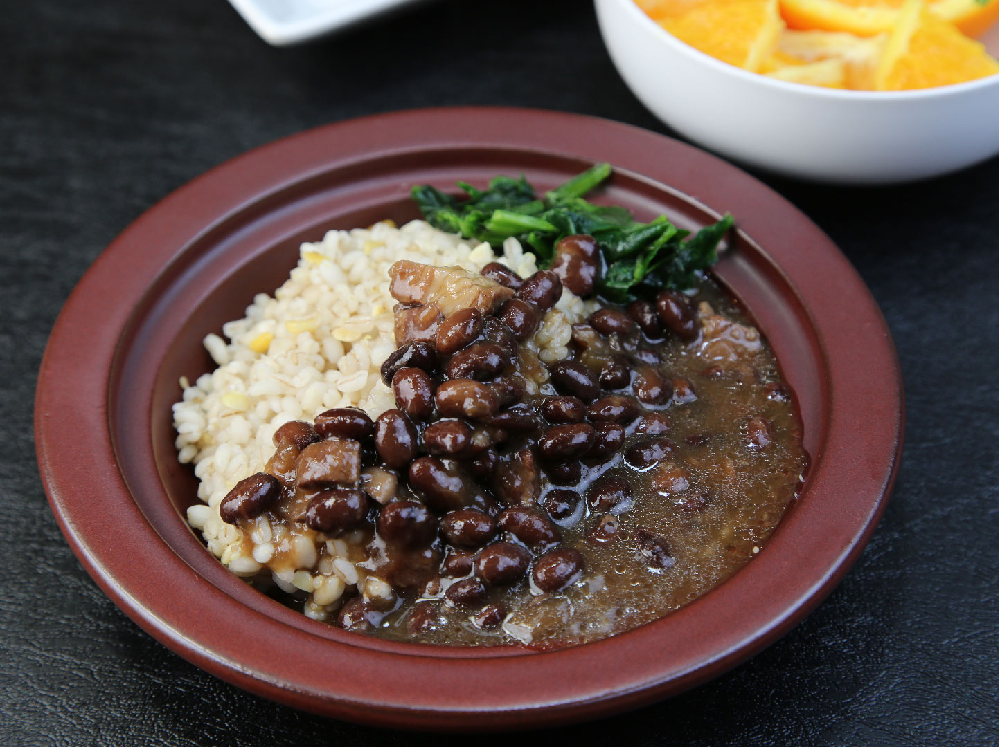
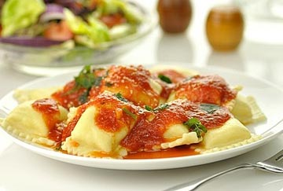
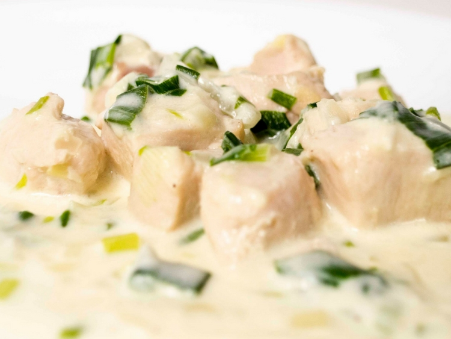
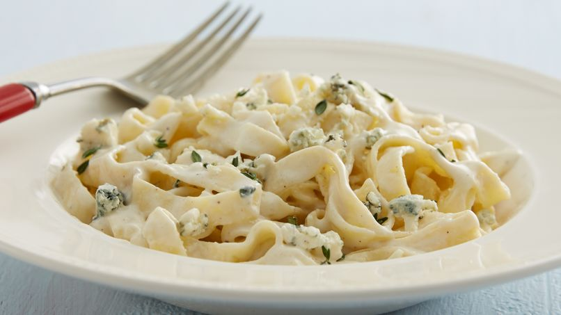

Blog de Recetas
La comida es escencial!

Sancocho

Pechuga a la parrilla

Lasagna

Burritos

Arroz con habichuelas

Rabiolis
Historial
Pechuga a la crema
Publicado el 24 de Septiembre

Ingredientes
para 1 porción- 1 pechuga de pollo
- 3 cdas. de crema (…o queso crema)
- 1 cdita. de mostaza
- Sal, pimienta, granos de mostaza si tenés
- Cebolla de verdeo
Instrucciones
- Cortar la pechuga en tiritas. Si quisieran podrían utilizar las pechugas enteras, pero tardará más en cocinarse. Al cortarla en cubos o tiras facilitamos su cocción.
- Salpimentarla y unirla con la crema y la mostaza, mezclando bien hasta integrar totalmente.
- Poner en microondas por 1 minuto a potencia máxima. Sacar y revolver.
- Volver al microondas por 2 minutos más. Revolver nuevamente.
- A partir de aquí se le puede dar un minuto más, eso es a gusto. A mí me gusta así porque sino queda muy seco el pollo. También depende de cada microondas, algunos cocinan más rápido que otros y viceversa, por lo que ustedes deberán estar atentos para lograr la cocción justa (siempre poniendo lapsos cortos de 1 o 2 minutos hasta lograr la cocción).
- Colocar semillas de mostaza por arriba y cebolla de verdeo picada antes de llevar a la mesa.

Juan Gonzalez
Wow excelente receta me resulto, muy deliciosa, la verdad se dura un poco en el proceso pero vale la pena, de verdad, pruebenla!
Jose Olivo
Yo vi esa receta en un video pero la que lo explicaba huele a carcel!
Isis Hernandez
Muy rica la receta!
Alfaqueli Romero
Ahora mismo la voy a prepara, solo debo ir al super.
Fettuccine Alfredo con Queso Roquefort
Publicado el 22 de Enero

Ingredientes
- 1 cucharada de mantequilla
- 1 echalote mediano, finamente picado
- 2 dientes de ajo, finamente picados
- 1/4 taza de vino blanco
- 1 tazas de crema para batir (1 pinta)
- 3/4 taza de queso Roquefort o cualquier “blue cheese”, desmoronado
- 1 1/4 taza de queso Parmesano rallado (5 oz)
- 1/4 cucharadita de nuez moscada molida
- Sal, si la deseas
- Pimienta recién molida, si la deseas
- 1 caja (16 oz) de fettuccine
Instrucciones
- En una olla de 2 cuartos de galón, derrite la mantequilla a fuego medio alto. Agrega y cocina los echalotes de 1 a 2 minutos moviendo constantemente hasta que estén transparentes. Agrega el ajo y cocina de 30 segundos a 1 minuto.
- Agrega el vino y deja que se evapore un poco. Agrega la crema, la nuez moscada, los quesos, la sal y la pimienta. Reduce la flama a media y déjala cocinando de 15 a 20 minutos a fuego medio hasta o hasta que se reduzca a 3/4 de su volumen original. No se va a hacer muy espesa.
- Cocina fettuccine como lo indican las instrucciones del paquete. Retira a un lado.
- Sirve con la pasta y agrega, si lo deseas, queso Parmesano y Roquefort adicional.
Esmeralda Marrero
Buenisimo
Linda Fuerte
Excelente descripcion de la preparacion de la receta, muy claro todo
Dionicio Acevedo
Me gusta mucho esta pagina, de seguro quien al desarrollo estudio en Next U, porque esta muy bien diseñada..
Julio Encarnacion
Hay no, eso e muy chin, taba muy bueno pero, se acaba de un bocao, la unica mejora es esa, pero despues todo bien, muy bueno!